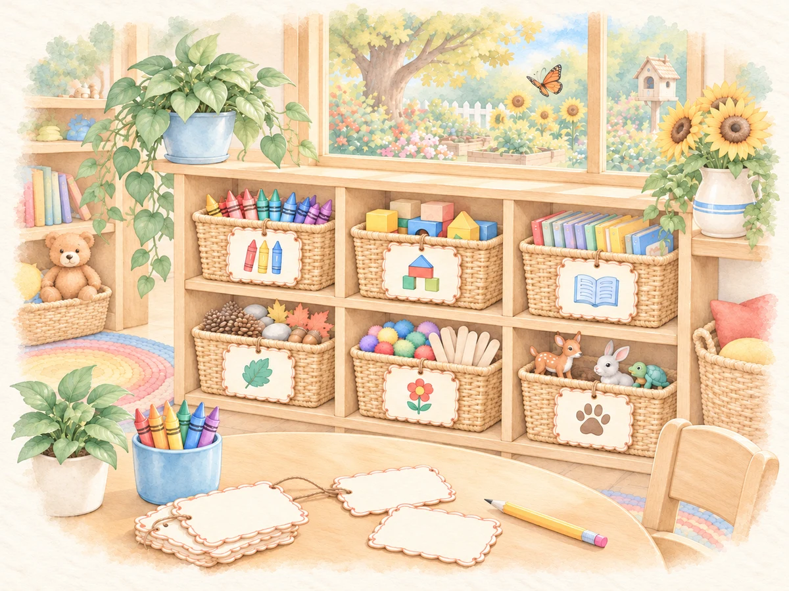

LITTLE SOLUTIONS
Little Labels
Create classroom labels, review the wording and layout, then prepare print-ready sheets.
$4.99
Ways to use it
- Organize classroom materials.
- Prepare clear labels for classroom routines.
How to use it
- Choose Type a Label, enter your wording, and select Review Label.
- Check the wording, optional second-language text, label size, and copies.
- Choose Save & Add to Print to save the label and queue copies.
- Create print sheets and choose Open Print PDF.
Practical details
Print on US Letter (8.5 × 11 inches) at 100% / Actual Size. Save unfinished labels before closing or reloading the app. Check one printed sheet before making a full set.
Explore together
Choose the setup that fits your lesson or classroom routine.